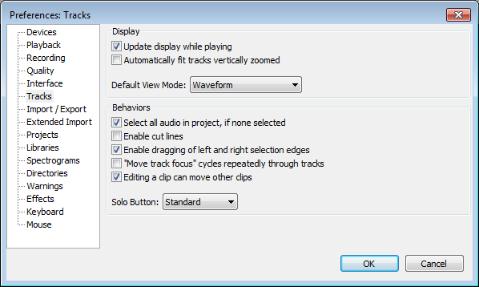

Tracks Preferences
From Audacity Manual
- Accessed by: (on a Mac
- 
- Click on any of the other Preferences sections in the above image to go directly to that Preferences page.
Display
- Update display while playing: This scrolls the timeline to left during play or recording, so that the playback or recording cursor remains visible. Most users would keep this enabled, but on slower computers turning it off can prevent interrupted playback or recording. Turning it off allows you to drag the horizontal scrollbar at the bottom of the screen to a new playback position then restart playback from there.
- Automatically fit tracks vertically zoomed: Tracks will be automatically resized to fill the vertical space on screen without scrolling.
- Default View Mode: Choose the default view for newly-created tracks. The choices are the same as those available in the Audio Track Dropdown Menu.
Behaviors
- Select all audio in project, if none selected: If you select no audio before applying an effect, the effect will be automatically applied to all audio in all tracks. This also applies to other menu items requiring an audio selection to be made. If this preference is unchecked, all menu items requiring an audio selection will remain grayed out until audio is selected.
- Enable cut lines: Displays a light blue vertical line at the left edge of a cut edit, which changes to red after clicking elsewhere in the track. Click on the line at any time to restore the cut audio; if you restore in error, use to get the cut line back. To remove the line without restoring audio, right-click over it. will restore the line if you make a mistake.
- Enable dragging left and right selection edges: Lets you expand or contract existing selection areas with the mouse after they have been created. If unchecked you must use the Selection Bar or keyboard to modify existing selection areas. See Audacity Selection for further details.
- "Move track focus" cycles repeatedly through tracks: When using the up and down arrow keys to change which track is focused, moving the focus off one end (top or bottom) makes the focus jump to the other end.
- Editing a clip can move other clips: If the track has been split into more than one clip, any clips following to right of the edit point can always move as necessary in response to pasting, cutting, deleting or other change that adds or removes content.
Unchecking "Editing a clip can move..." pins clips so that they can't move in response to an edit in another clip. When removing content, any following clips will not be allowed to move back. When pasting, an error message will display if there is not enough room to paste without moving the following clips.
- Solo Button: The "Solo" button on the Track Control Panels can behave in three different ways:
- "Standard" will suit those used to mixing desks and other professional audio software. Any number of tracks can be made solo so that they mix together, but if any solo button is down, the mute buttons have no effect. If on any occasion you want the Solo button to play only one track at a time (so that clicking it releases any other solo buttons), hold down SHIFT when clicking Solo.
- In "Simple" mode, "Solo" means as it does in common parlance - a track made solo is the only one that can be heard. If a track is solo, the mute buttons are set down on all the other tracks, so that solo is just a shortcut way of muting all tracks except one. If on any occasion you want the Solo button to select multiple tracks for listening, hold down SHIFT when clicking Solo.
- "None" mode has no solo buttons, so you select the tracks you want to play by unmuting them (clicking the mute buttons so that they are up).